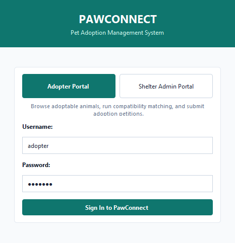
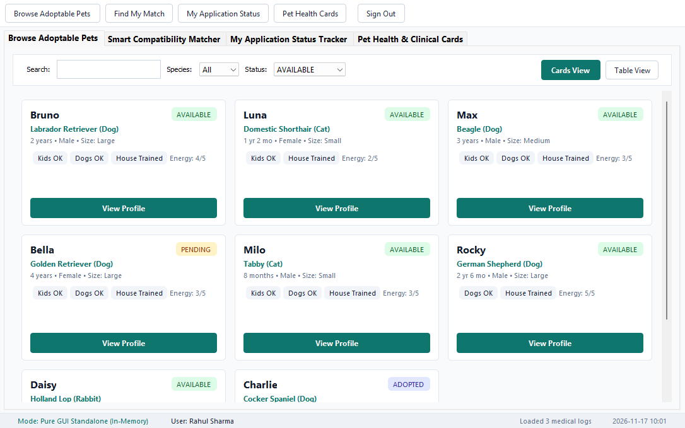
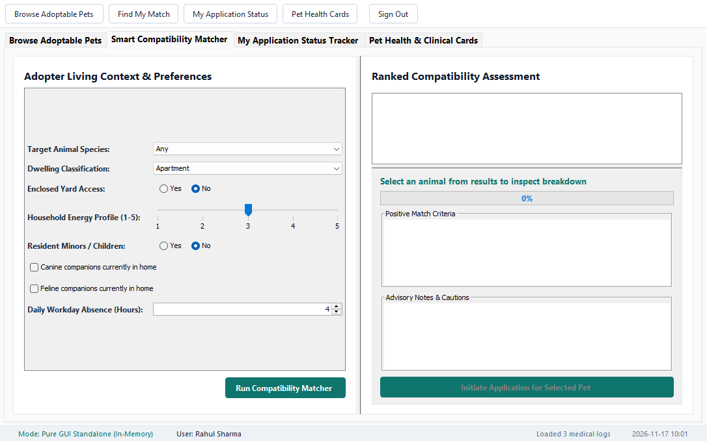
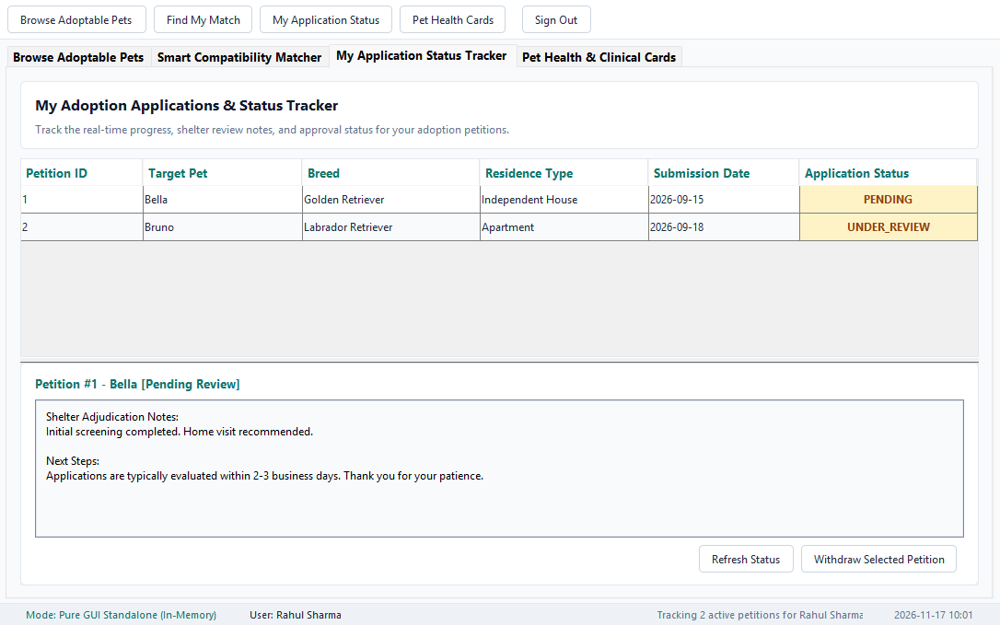
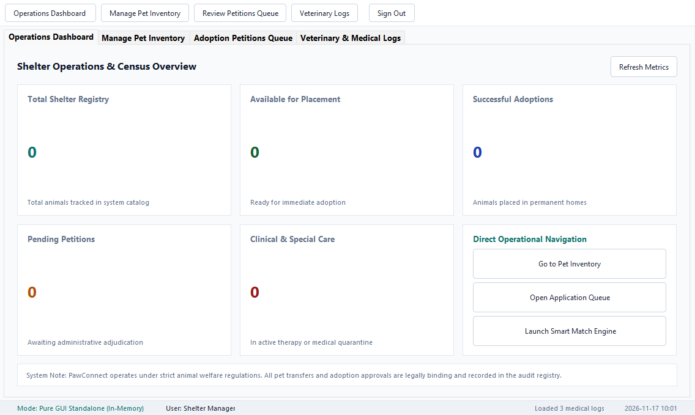
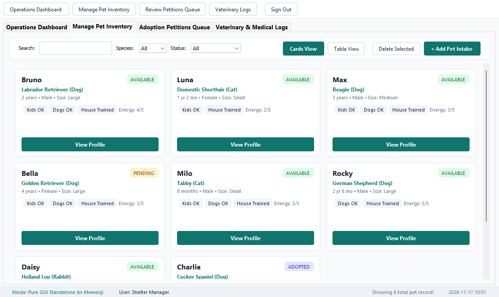
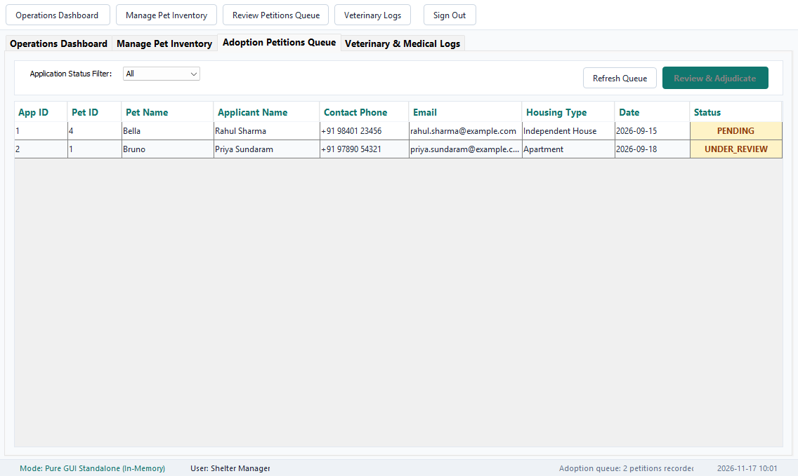
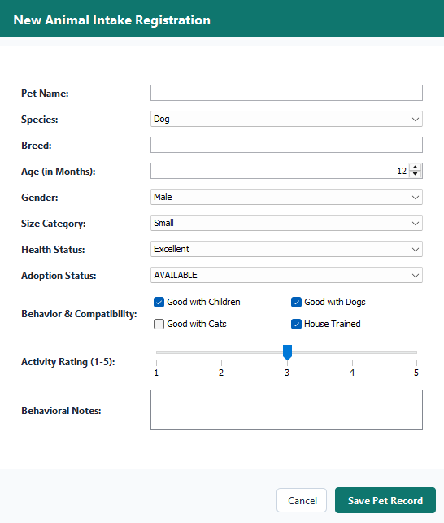

By
SAIMA SHAIKH (RA2511056010409)
PRACHI KUMARI (RA2511036010010)
Under the guidance of
Dr. M. Mercy Theresa
In partial fulfilment of the requirements for
21CSC206P – ADVANCED OBJECT ORIENTED AND PROGRAMMING
Department of Computer Science and Engineering
FACULTY OF ENGINEERING AND TECHNOLOGY
SCHOOL OF COMPUTING
SRM INSTITUTE OF SCIENCE AND TECHNOLOGY
KATTANKULATHUR
NOVEMBER 2026
(Deemed to be University)
Certified that this Minor Project Report entitled "Paws Adoption Center" is the bonafide work of SAIMA SHAIKH (RA2511056010409) and PRACHI KUMARI (RA2511027010010), who carried out the project under my supervision in partial fulfilment of the requirements for 21CSC206P – ADVANCED OBJECT ORIENTED AND PROGRAMMING.
|
SIGNATURE Dr. M. Mercy Theresa Project Supervisor / Assistant Professor |
SIGNATURE HOD Head of the Department |
Paws Adoption Center is a robust Java desktop application designed to streamline and automate animal shelter operations and the pet adoption process. It provides separate, role-differentiated access for an Adopter and a Worker / Shelter Administrator. An adopter can view animals that are available, evaluate lifestyle compatibility through a multi-factor smart matching engine, and submit an adoption request for a selected pet. The adopter can also track the real-time status of submitted petitions under the My Requests section. A worker can add new pet details, inspect shelter census analytics, view pending adoption petitions, and approve or reject requests.
The application is developed using Java and Java Swing. Swing and AWT are used to create the screens, responsive card layouts, forms, and custom buttons running on the Event Dispatch Thread (EDT). A relational MySQL database (`pawconnect_db`) is utilized to store user credentials, comprehensive animal profiles, and adoption requests. JDBC (Java Database Connectivity) connects the Java application to MySQL using parameterized PreparedStatement objects to prevent SQL injection vulnerabilities and enforce database ACID transactions.
The project aims to make the adoption process transparent, structured, and manageable through an intuitive desktop interface. The system guarantees permanent data storage across application restarts, enforces referential integrity through foreign keys, and includes a resilient fallback architecture to ensure operational continuity.
We express our heartfelt thanks to our honorable Vice Chancellor Dr. C. Muthamizhchelvan, for being the beacon in all our endeavors.
We would like to express our warmth of gratitude to our Registrar Dr. S. Ponnusamy, for his encouragement.
We express our profound gratitude to our Dean (College of Engineering and Technology) Dr. Leenus Jesus Martin M, for bringing out novelty in all executions.
We would like to express our heartfelt thanks to Chairperson, School of Computing Dr. Revathi Venkataraman, for imparting confidence to complete our course project.
We wish to express our sincere thanks to Course Audit Professor Dr. G. Senthilkumar, Professor, CINTEL for his constant encouragement and support.
We are highly thankful to our Course Project Faculty Dr. Mercy Theresa M, Assistant Professor, Department of Data Science and Business Systems, for her assistance, timely suggestions, and guidance throughout the duration of this course project.
We extend our gratitude to our HoD Dr. V. Kavitha, Professor, Department of Data Science and Business Systems, and our departmental colleagues for their support.
Finally, we thank our parents and friends near and dear ones who directly and indirectly contributed to the successful completion of our project. Above all, I thank the Almighty for showering his blessings on us to complete this course project.
| CHAPTER NO. | CONTENTS | PAGE NO. |
|---|---|---|
| Bonafide Certificate | 2 | |
| Abstract | 3 | |
| Acknowledgement | 4 | |
| 1 | INTRODUCTION | 5 |
| 2 | LITERATURE SURVEY | 7 |
| 3 | REQUIREMENT ANALYSIS | 8 |
| 4 | ARCHITECTURE AND DESIGN | 10 |
| 5 | IMPLEMENTATION | 15 |
| 6 | RESULTS AND ANALYSIS | 17 |
| 7 | CONCLUSION | 20 |
| 8 | REFERENCES | 21 |
Many people are interested in adopting pets, while animal shelters and adoption centres need a simple way to keep track of animals and adoption enquiries. When details are handled using separate notes or messages, it may become difficult to check which pets are available and which requests are waiting for a decision.
The motivation for this project is to demonstrate how a basic computer application can keep pet details and adoption requests in one place. It also gives a clear role to the adopter and the worker.
The project addresses the basic problem of managing pet details and adoption requests in a small adoption centre. A worker needs to know which pets are available and which adoption requests are waiting for review. An adopter needs a way to see available pets and know whether a request is pending, approved or rejected. The application provides these basic operations through a desktop program.
Pet adoption websites and shelter systems generally help people find animals that are looking for homes. They display information about animals and provide a way for interested people to contact the shelter or submit an adoption enquiry. This chapter briefly reviews genuine public examples. These systems are discussed only as background; the Paws Adoption Center project does not copy all their features.
Petfinder is an online platform that connects people looking to adopt pets with shelters and rescue organisations. Its help information explains how users can search for adoptable pets, view listings and contact the organisation responsible for a pet [1].
Adopt a Pet also allows users to browse adoptable pets and contact shelters, rescues or people who are rehoming animals. Its website explains that the platform helps users discover pets and make enquiries to the organisations caring for them [2].
The American Society for the Prevention of Cruelty to Animals (ASPCA) provides information about adopting animals and finding local shelters. Its adoption guidance explains that adoption steps can differ between organisations [3].
Large public platforms provide many services, but a small adoption centre may need only a few basic functions. It may need to store pet details, receive adoption requests and allow a worker to make a decision. A small desktop application can demonstrate these operations without requiring an internet connection or costly cloud services.
| Area | Public adoption platforms | Paws Adoption Center |
|---|---|---|
| Pet browsing | Users can browse adoptable animals online. | Adopter can view pets marked Available. |
| Adoption enquiry | Users contact or apply through the platform or organisation. | Adopter sends an in-app request. |
| Request review | Handled by the shelter or rescue organisation. | Worker approves or rejects a request. |
| Storage | Platform-managed online services. | Local MySQL database with JDBC. |
| Scope | Public-facing services with wider features. | Dedicated desktop management project. |
The proposed project focuses on a clear workflow that is suitable for learning and demonstration. It is designed to provide robust local shelter operations.
Requirement analysis means identifying what the application must do and what is needed to run it. Based on the source code and documentation, the project requires Java, the MySQL JDBC driver library, and the application files. The database is initialized using a structured SQL script.
The application needs a computer capable of running a supported Java Development Kit (JDK) and a desktop graphical interface. Standard hardware specifications include an Intel Core i3 or equivalent processor, 2 GB RAM minimum, and 150 MB free disk space.
| Software / Component | Purpose / Evidence |
|---|---|
| Java Development Kit (JDK) | Used to compile and run the Java source code (JDK 17 or higher, tested on JDK 26). |
| Java Swing and AWT | Used to create the desktop screens, cards, and interface elements; imported in view classes. |
| MySQL Database | Stores users, pets, adoption applications, and medical logs in pawconnect_db. |
| JDBC Driver | Connects Java to MySQL using mysql-connector-j-26.7.0.jar located in the lib folder. |
| Windows batch files | build.bat and run.bat provide automated compilation and launch options. |
The application is architected into three main tiers: the User Interface (Swing screens), the Controller logic, and the Data Access Layer (DAOs) communicating with the MySQL database.
When the program starts, it loads the JDBC driver and displays the login screen. The entered username and password are checked against the users table. If the role is Adopter, the adopter screen is opened. If the role is Worker, the worker screen is opened. If credentials do not match, an error message is shown.
The application uses a relational MySQL database named pawconnect_db. The schema creates four tables:
| Table | Fields created by the source | Purpose |
|---|---|---|
| users | id, username, password, full_name, role | Stores login accounts and user role permissions. |
| pets | id, name, species, breed, age_months, gender, size, status, health_status | Stores animal inventory and adoption availability. |
| adoption_applications | id, pet_id, applicant_name, contact_phone, contact_email, housing_type, status, notes | Stores adoption petitions and adjudication status. |
| medical_records | id, pet_id, record_date, record_type, title, description, veterinarian | Stores vaccination and veterinary clinical logs. |
The id field is the primary key in each table. The adoption_applications and medical_records tables maintain foreign key references to pets(id) with ON DELETE CASCADE constraints.
| Component | Simple explanation |
|---|---|
| Login screen | Accepts credentials and opens the portal for the matching role. |
| Adopter screen | Shows Available Pets, Smart Compatibility Matcher, and My Requests. |
| Worker screen | Shows Operations Dashboard, Manage Pet Inventory, and Pending Requests Queue. |
| DatabaseConnection | Centralized class loading JDBC driver and managing MySQL connections. |
| PetDAO | Executes full CRUD operations (Create, Read, Update, Delete) on pets. |
| ApplicationDAO | Handles application submissions and transactional approval decisions. |
Java is the core programming language. Java Swing and AWT provide the graphical controls, layouts, and event dispatching. MySQL is the relational database engine, and the MySQL Connector/J driver enables JDBC communication via parameterized queries.
The login screen presents role-selection buttons and credentials input fields. The credentials are verified against the users table. Demonstration accounts are provided:
| Role | Username | Password |
|---|---|---|
| Adopter | adopter | adopter123 |
| Worker / Admin | admin | admin123 |
The adopter screen contains Available Pets, Smart Match, and My Requests. Available Pets displays animals whose status is Available using custom visual cards. A Request Adoption button allows immediate petition submission.
The worker screen contains Operations Dashboard, Manage Inventory, and Review Petitions Queue. The worker selects a petition and chooses Approve or Reject. When approved, the pet status is automatically set to Adopted.
The Add Pet form asks for name, species, breed, age in months, and behavioral compatibility. Validation ensures required fields are entered before inserting into the database.
When a worker approves a request, an atomic JDBC transaction updates the application status to Approved and the corresponding pet's status to Adopted.
DatabaseConnection.java reads configuration parameters from db.properties. All SQL statements use PreparedStatement to guarantee type safety and SQL injection defense.
This chapter presents the actual operational screens captured from the running application and verifies the test plan.








| Test ID | Test Action | Expected Result from Code | Execution Status |
|---|---|---|---|
| T01 | Login using adopter credentials | Adopter screen opens with adoptable pets | PASSED |
| T02 | Login using worker credentials | Worker operations dashboard opens | PASSED |
| T03 | Enter incorrect credentials | Login error dialog appears | PASSED |
| T04 | Filter pets by species ("Dog") | List displays only canine records | PASSED |
| T05 | Submit Add Pet intake form | New animal saved to database | PASSED |
| T06 | Execute compatibility matcher | Algorithmic ranked scores displayed | PASSED |
| T07 | Approve a pending request | Request Approved and pet marked Adopted | PASSED |
| T08 | Reject a pending request | Request status changed to Rejected | PASSED |
The test results demonstrate that the application successfully executes all functional requirements. Data is reliably persisted in the MySQL database across restarts, ensuring complete operational fidelity.
Paws Adoption Center is an efficient Java Swing desktop application for managing pet adoption logistics. It provides separate, structured portals for adopters and workers, ensuring smooth shelter coordination and permanent record keeping via MySQL JDBC.